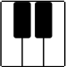
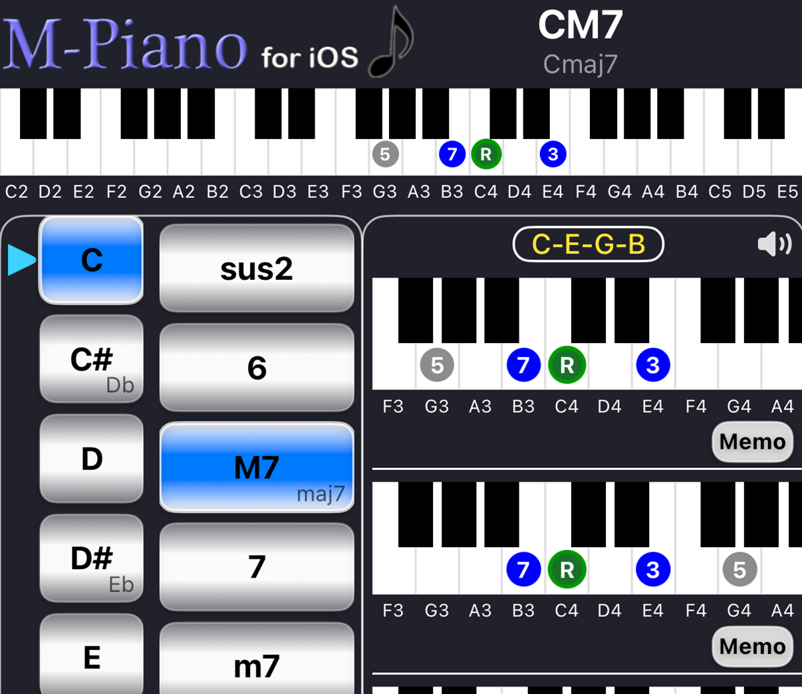
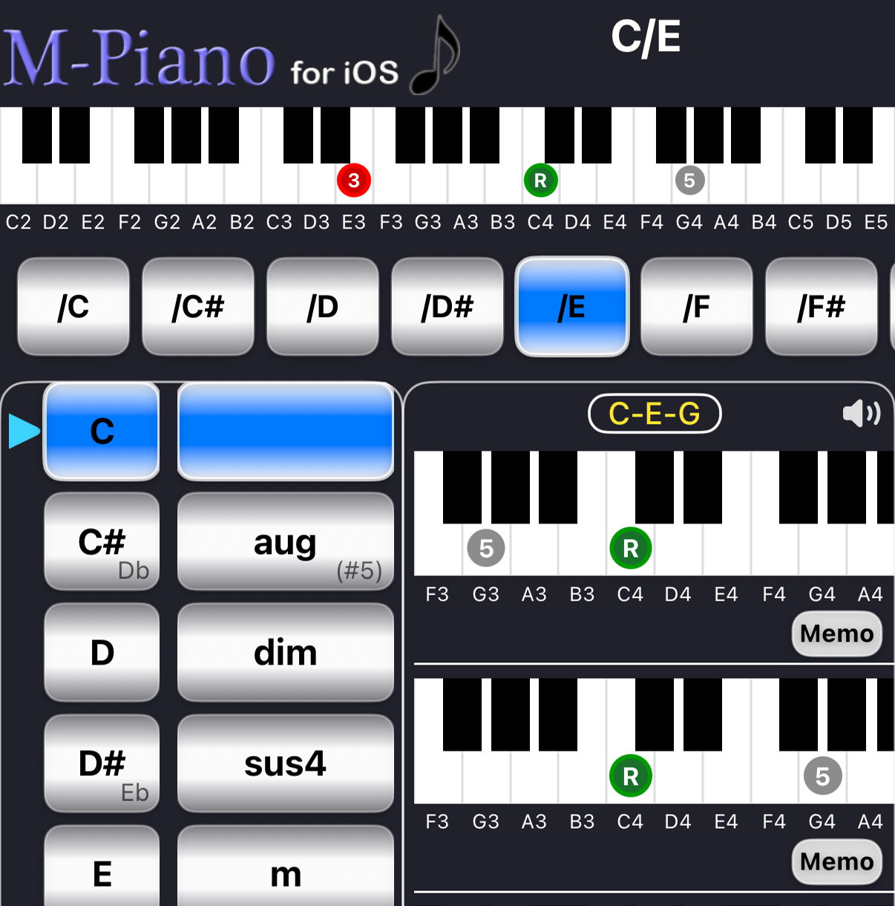

ForwardSearch piano chords by chord name
Forward is a feature that allows you to search for piano chords by chord name.
By selecting the root and chord type, you can view the chord tones and keyboard positions.

To search for a chord, select the following two items.
Example
Root : C Type : m → Cm
When a chord is selected, the chord tones are displayed on the piano keyboard.
Displayed elements
Forward displays multiple chord positions.
Each position uses a different keyboard layout.
Tap the keyboard to play the chord.
You can check the chord positions while listening to the actual sound.
The speaker icon in the upper-right corner toggles the sound on or off.
Tap the Memo button next to the chord to add it to Memo.
This allows you to create chord progressions.
The range of displayed chord types can be changed in Setting.
You can also reduce the number of displayed chords for beginners.
The following features are available in the Pro version.
In the Pro version, you can display on-bass chords.

Example
C / E C / G C / B♭
When an on-bass chord is selected, position markers are displayed on the large keyboard at the top.
When you tap the keyboard,
are played together as a chord sound.